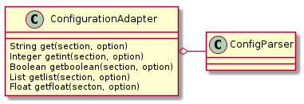

Since the Test class is getting values from the configuration-parser, I’m creating an adapter to add methods to allow optional values. To make it easier not all of the ConfigParser methods will be implemented, the rest will be passed onto the ConfigParser object.

ConfigurationAdapter(config_parser) |
An adapter to the ConfigParser to add optional-value methods |
ConfigurationAdapter.get(section, option[, ...]) |
Similar to the ConfigParser.get, but changed so getint and getboolean will match |
ConfigurationAdapter.getint(section, option) |
Gets a value from the configuration and tries to cast it to an integer. |
ConfigurationAdapter.getfloat(section, option) |
Gets a value from the configuration and tries to cast it to an integer. |
ConfigurationAdapter.getboolean(section, option) |
Gets value and casts to a boolean |
ConfigurationAdapter.getlist(section, option) |
gets a string and converts it into a list |
ConfigurationAdapter.section_dict(section) |
A convenience function to return the section option=value pairs as option:value dict |
ConfigurationAdapter.__getattr__(attribute) |
A pass-through to the config parser for all the methods I don’t implement |
The ConfigParser get method will let you pass in a dictionary called vars to set default values for an option, but this wasn’t done for the other ‘get’ methods (like getint) so I’m adapting all of them to have (mostly) the same interface.
| Parameter | Description |
|---|---|
| section | Section with option (i.e. [SECTION] header) |
| option | Option in section whose value to return (<option>=<value>) |
| optional | If True returns default for missing options or sections |
| default | Value to return if optional and no option found in configuration |
Because they all behave more or less the same, the other get methods are just calling the new get method behind the scenes. To differentiate between the different types of get<type> methods, the get method takes a string method that matches the specific get method to use (e.g. getint or getboolean) and calls the ConfigParser’s implementation of the method. The only time the behavior of these methods differs from the ConfigParser’s versions is if optional is set to True, in which case it traps the ConfigParser.NoSectionError and ConfigParser.NoOptionError and returns the default argument instead. The default default is None, so something more sensible can be passed in if a value is known, otherwise the user of this class can check for None as the return value to see of the user put the option in the configuration file.